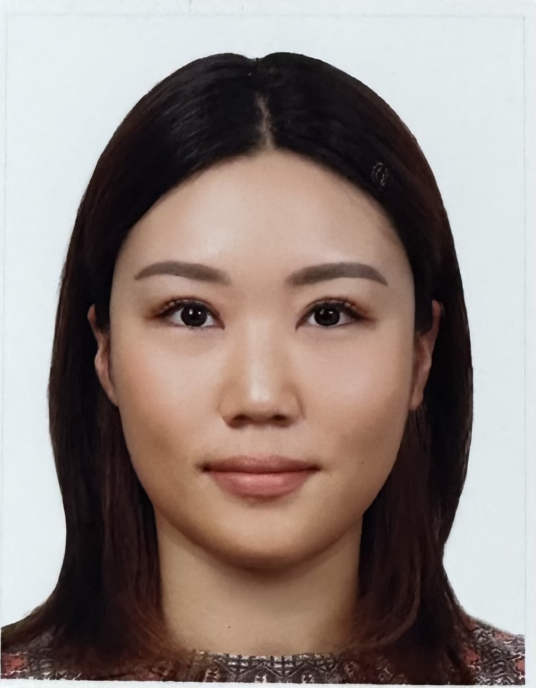

Sukyung Kwon (Su)

I am a prospective web developer graduating with a Bachelor of Computer Science in 2024. With a background in education, holding both a Bachelor's and a Master's degree in Education, I've spent three years as an early childhood teacher. I bring a strong work ethic, teamwork skills, and a passion for learning to any project, and I'm excited to leverage my diverse background in my web development career.
Education
- Bachelor of Computer Science,
Seoul Cyber University (2023 - current)
- Master of Early childhoohd and Primary Education,
Monash University (Jan 2021)
- Bachelor of Primary Education,
Gyeongin National University of Education (Feb 2018)
- Certificate IV in Communicative TESOL,
Australian Pacific College (Dec 2018)
Work Experience
Early childhood Teacher, Minnows ELC
July 2021 - current
- Applying comprehensive knowledge of early childhood development and education, including the Victorian Early Years Learning and Development Framework and the Early Years Learning Framework.
- Identifying and accommodating children with diverse needs in collaboration with Specialist Children's Services, Pre-School Field Officers, professionals, and families.
- Creating transition reports for children transitioning to school the following year.
- Composimg observation notes, learning stories, and formative/summative assessments to track and assess children's development and progress.
- Efficiently managing the kindergarten program, showcasing strong organisational, time management, administrative, and computer skills.
- Fostering collaborative practices, recognising and supporting connections among colleagues, children, families, and communities in the learning process.
- Providing effective supervision, training, and guidance to co-workers as needed.
Early childhood Teacher, Bluebird ELC
Noveber 2020 - July 2021
Early childhood Educator, KaTeeny ELC
March 2020 - Dec 2020
Skills and Certifications
- Victorian Institute of Teaching Full registration
- Level 2 First Aid Certificate including Asthma and Anaphylaxis management and CPR Certificate
- Leadership
- Ability to Multi-task
- Teamwork
Contact Me